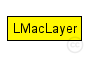
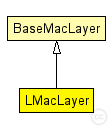

This documentation is released under the Creative Commons license
This documentation is released under the Creative Commons licenseImplementation of L-MAC (Lightweight Medium Access Protocol for Wireless Sensor Networks)
See C++ documentation for details
The following diagram shows usage relationships between types. Unresolved types are missing from the diagram. Click here to see the full picture.
The following diagram shows inheritance relationships for this type. Unresolved types are missing from the diagram. Click here to see the full picture.
| Name | Type | Description |
|---|---|---|
| BaseMacLayer | simple module |
Base module for every mac layer module |
| Name | Type | Default value | Description |
|---|---|---|---|
| notAffectedByHostState | bool | false | |
| coreDebug | bool | false |
debug switch |
| headerLength | int |
length of the MAC packet header (in bits) |
|
| address | string | "auto" |
MAC address as hex string (12 hex digits), or "auto". "auto" values will be replaced by a generated MAC address in init stage 1. |
| debug | bool | false |
enable per module debug |
| slotDuration | double | 100ms |
how long is a slot? |
| queueLength | double | 10 |
length of MAC header |
| defaultChannel | double | 0 |
default channel |
| bitrate | double | 19200bps |
bit rate |
| reservedMobileSlots | int | 2 | |
| numSlots | int | 64 | |
| txPower | double | 50 |
| Name | Value | Description |
|---|---|---|
| class | LMacLayer |
| Name | Direction | Size | Description |
|---|---|---|---|
| upperLayerIn | input |
from upper layer |
|
| upperLayerOut | output |
to uppe layer |
|
| upperControlIn | input |
control from upper layer |
|
| upperControlOut | output |
control to upper layer |
|
| lowerLayerIn | input |
from lower layer |
|
| lowerLayerOut | output |
to lower layer |
|
| lowerControlIn | input |
control from lower layer |
|
| lowerControlOut | output |
control to lower layer |
// // Implementation of L-MAC (Lightweight Medium Access Protocol for // Wireless Sensor Networks) // // See C++ documentation for details // simple LMacLayer extends BaseMacLayer { parameters: // enable per module debug bool debug = default(false); // how long is a slot? double slotDuration @unit(s) = default(100ms); // length of MAC header double queueLength = default(10); // default channel double defaultChannel = default(0); // bit rate double bitrate @unit(bps) = default(19200bps); // level at which we consider medium busy FIXME not used currently // double busyRSSI; int reservedMobileSlots = default(2); int numSlots = default(64); double txPower = default(50); @class(LMacLayer); }
This documentation is released under the Creative Commons license